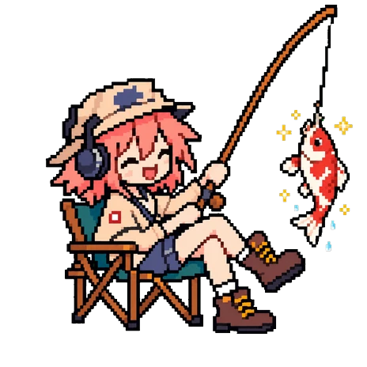
Round 12
An audit of the round 12 screenshots. Her two new poses drifted off-model, so they are regenerated first; the layout proposals follow, each with the current screen on the left and the proposal on the right.
The sprite that plays in the app is deadpan in the Tsukumizu way: two tall dark slits set wide and low, no mouth at all, and the face does not react to anything. The round 12 poses lost that. The catch pose got closed arc eyes, an open mouth with a tongue and blush. The doze pose kept a mouth line and blush, and its hat and hair outlines got heavier, so her head reads as a different drawing from the frames beside it.
The fix is a hard rule in the prompt rather than a mood word. "Happily", "big smile" and "sparkle" were in the round 12 prompts, and the model drew exactly that. The new prompts pin the face and let only the pose change:
FACE RULES, most important: her face is deadpan and expressionless exactly like the reference: two tiny dark dot eyes set wide apart and low on the face, and NO MOUTH drawn at all. Do not draw a smile, an open mouth, blush marks, or sparkly eyes. Keep the face calm and flat no matter what is happening.
The joke is the same one Tsukumizu makes: something happens and her face does not. She lands a koi and looks at it. The fish gets away and she looks at the empty hook. Each new frame is keyed and registered on the 464px sprite frame against the chair in the play strip, so swapping poses never moves her chair.

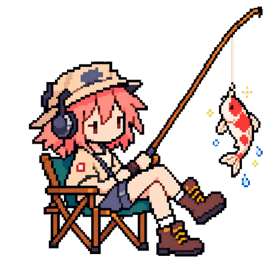
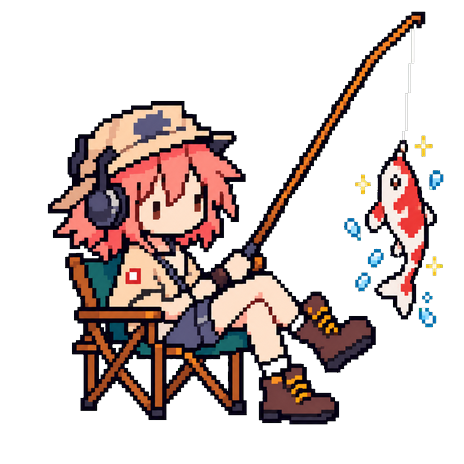
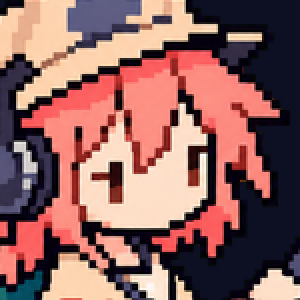
The proposed frame keeps the tall slit eyes of the play strip. The alternate was generated with the Tsukumizu page as a style reference and came out with rounder dots; it is closer to the reference but further from the frames it has to sit next to.
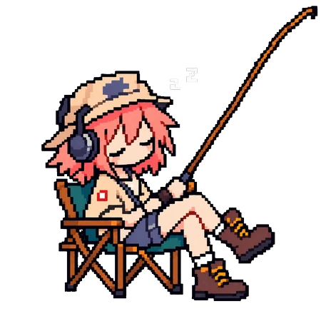
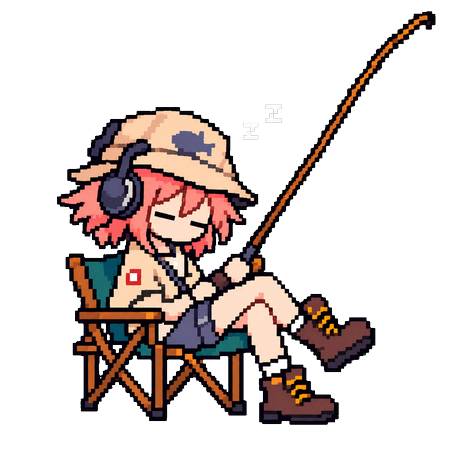
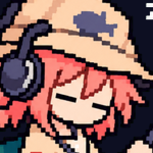
Eyes closed as two flat lines, no mouth, no blush, hat and hair drawn like the play strip.
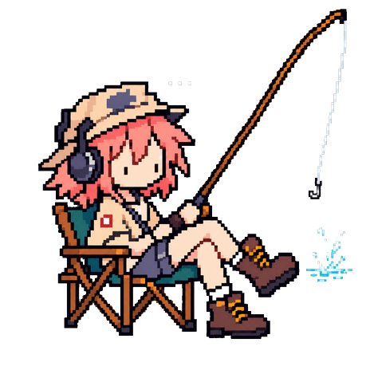
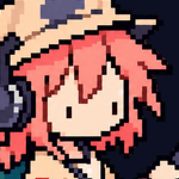
The line hangs slack with a bare hook, a splash where the fish went, and a "..." over her head. Shown for the answer wait after a miss, then back to the play strip on CONTINUE.
| Pose | Where | Change |
|---|---|---|
| play | Quiz and listen, any song playing | None, the strip stays |
| doze | Desktop pane with nothing playing | Replace the frame |
| catch | Perfect run, phone home when caught up, clip review with hits | Replace the frame |
| miss | Answer wait after a wrong answer | New frame, one line in QuizColumn |
Files: mockups/round-13/pose-new-*.png, already 464px and chair-registered. Adopting them is a cwebp
into apps/web/src/assets and no code change for doze and catch.
Today listen mode gets a short strip and quiz mode gets the whole pane. Flipping the QUIZ switch repaints the pane: she jumps from 90px to 200px, the harbor changes cut, and the sentence lands somewhere new. In quiz mode most of the pane is sky, she is the size of the fishing boat, and the combo box floats in the water.
Proposal: the pane has one stage, the panorama at a fixed 300px, in every mode. She is the same size whether you are reading lyrics or answering, the combo box sits on the deck beside her, and the sentence box and answers get the room that used to be sky. Nothing moves when you toggle the quiz.
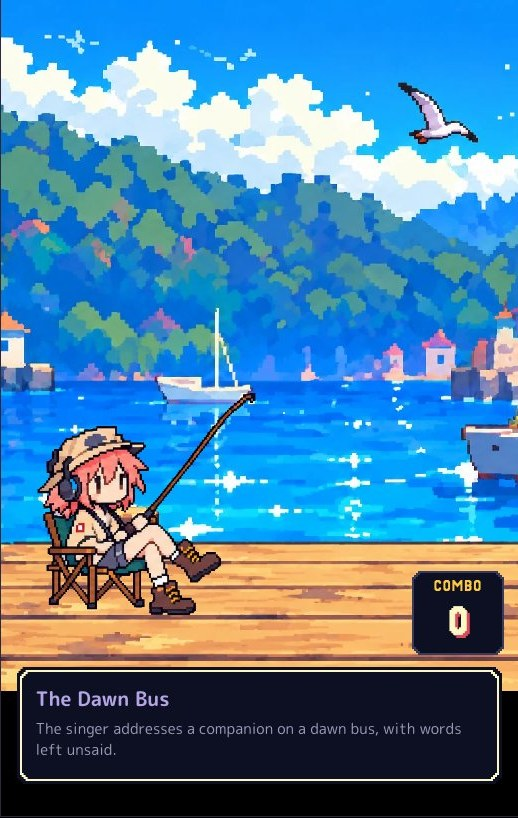
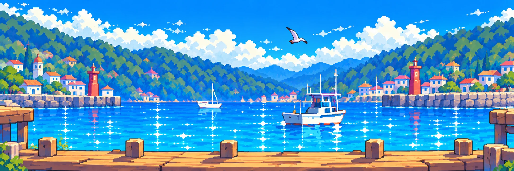
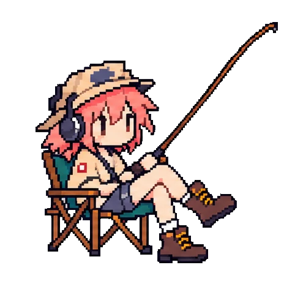
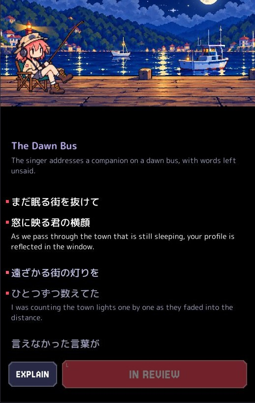
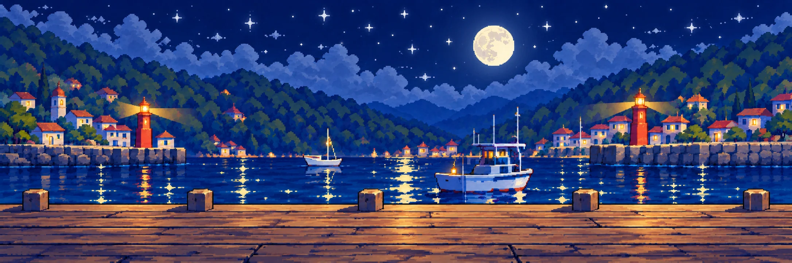
The hero is good. Under it, the review slot is two different things on two different days: a 130px red card with an icon, a count and a chevron when something is due, and a 56px grey pill when caught up. Everything below it shifts by 74px depending on the day.
Proposal: one 56px row in both states. Red with the count and the time it takes when something is due, quiet with the next due day when not. Same slot, same height, same tap target.
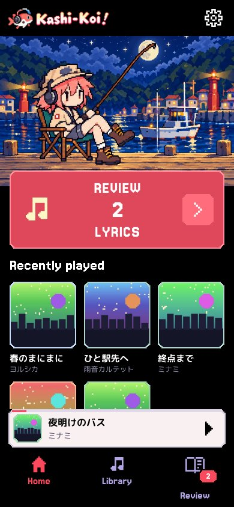
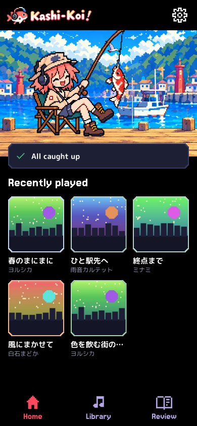
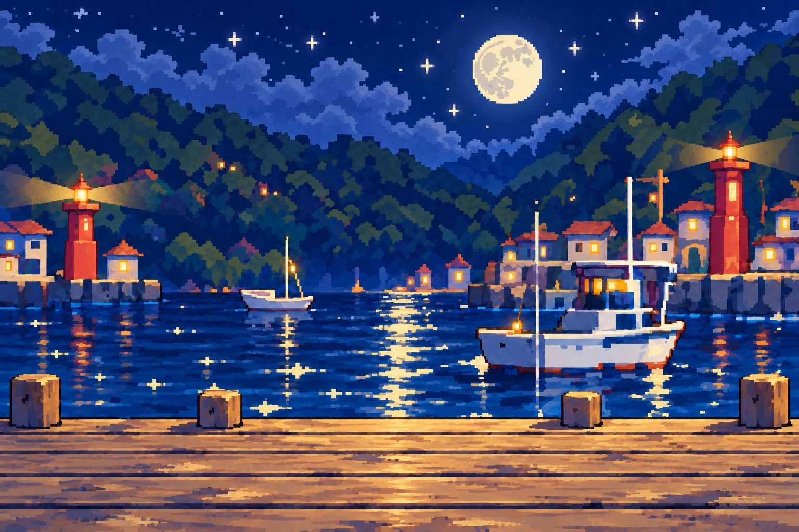
The mock shows both rows at once; the app shows one. Catch pose stays for the caught-up state.